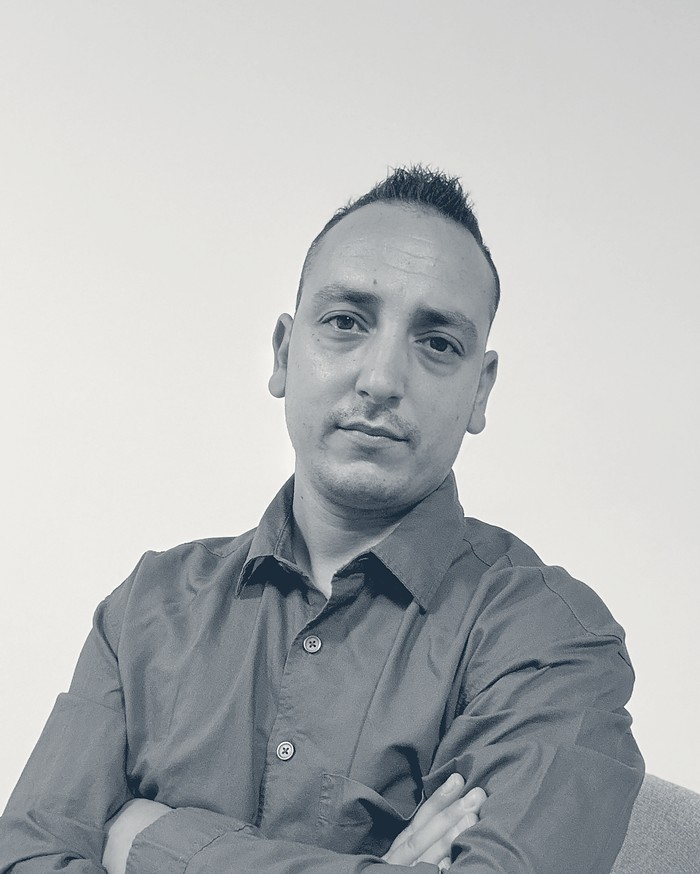

“Hay empleados que llevan meses trabajando al 60% sin que nadie lo llame por su nombre. No están de baja, no han dimitido, simplemente han dejado de estar ahí. Eso cuesta más que una baja, y no sale en ninguna hoja de Excel de RRHH.”
Yo soy la persona que entra en tu organización y encuentra dónde está pasando esto exactamente, por qué está pasando, y qué hacer al respecto antes de que se convierta en una baja, una salida, o un equipo entero funcionando por debajo de su capacidad real.
Analizamos cómo se relacionan las personas de tu equipo para prevenir lo que más cuesta a una empresa: bajas por ansiedad, estrés o burnout, fuga de talento, absentismo y conflictos internos que frenan el día a día. Convertimos ese malestar, muchas veces invisible, en datos claros y en mejoras que se notan en el ambiente de trabajo y en los resultados.
No hacemos terapia de grupo ni actividades genéricas de bienestar. Analizamos cómo funciona tu equipo por dentro y actuamos sobre esas dinámicas concretas, con cambios que se pueden ver y medir en la sostenibilidad y en los resultados de la empresa.
Cómo reacciona cada persona ante la presión: sus patrones de respuesta frente al estrés, el liderazgo y los cambios inesperados.
Cómo se relaciona el equipo entre sí: la comunicación y la confianza entre departamentos, y los conflictos que se repiten una y otra vez.
Cómo se gestiona ese desgaste (o ese buen ambiente) y se convierte en resultados concretos para el negocio.
Escuchamos, observamos y analizamos cómo se relaciona tu equipo: entrevistas, observación directa y mapeo de lo que está frenando el día a día.
Con esa información diseñamos un plan a medida: qué cambiar, en qué orden y por dónde empezar.
Trabajamos directamente con dirección y equipos clave: sesiones, talleres y acompañamiento en las conversaciones más difíciles.
Medimos lo que ha cambiado — clima, retención, ausencias — y dejamos las nuevas dinámicas ancladas para que se sostengan sin nosotros.
Empresas PYME, medianas y multinacionales cuya Dirección General o de Recursos Humanos necesita entender, con datos y sin rodeos, qué está pasando puertas adentro — y qué hacer con ello.
Si algo de esto te suena familiar en tu organización, hablemos.
Escríbeme y lo vemos →
Antes de la consultoría, pasé más de una década dentro de fábricas, almacenes y equipos de producción — la mirada de sistema no me viene de la teoría, sino de haberlo vivido por dentro. Me formé junto a Georges Escribano, creador de la Psicosocionomía —una disciplina centrada en cómo se relaciona el sistema, no en diagnosticar a las personas—, y hoy coordino el primer máster oficial de PSN en España.
Jonatan Pérez
Psicosociónomo · Consultor Estratégico en Dinámicas Relacionales